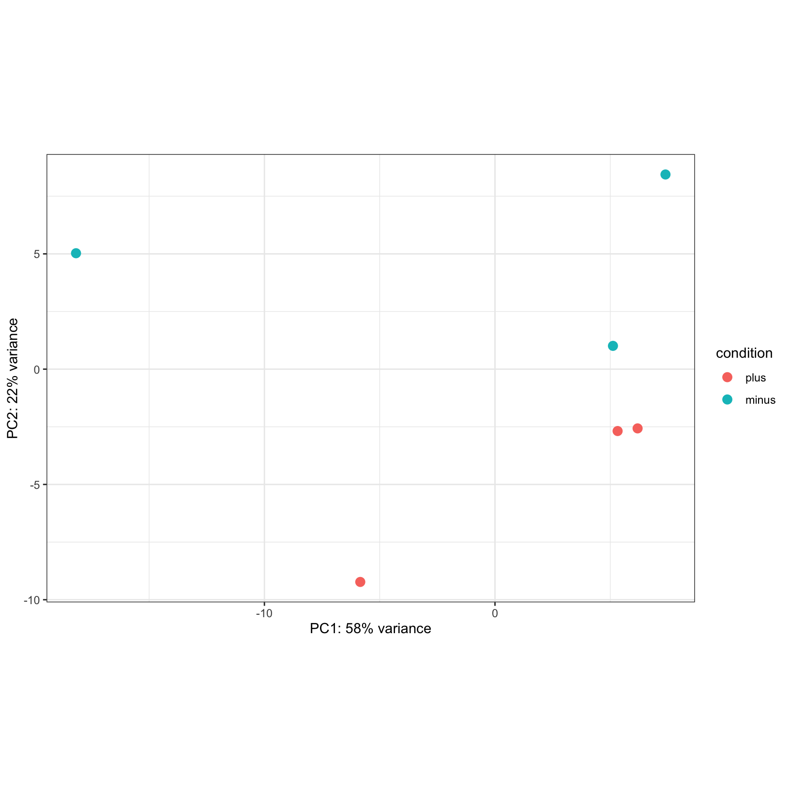

Estimated time: 15 Minutes
Motivation
Customizing plots can help us see patterns in the data or make the
claim(s) based on the data represented clearer.
Instructions
- Work independently in the main room, posting any questions that
arise to slack.
- Recommendations for writing your own code:
- Read function documentation
- Test out ideas - it’s okay to make mistakes and generate errors
- Use a search engine to look up errors or recommended solutions using
keywords
- We’ll review possible solutions after time is up as a group.
Exercise
Try doing the following to the pca_plot, starting with
the “most popular” request and moving on to other customizations if you
have time:
- Add a title and subtitle to the plot
- Update the color palette to be color-blind friendly
- Add labels to show which samples correspond to which points
- Use shape instead of color to indicate groups on the PCA plot.
- Challenge: Change the legend title to “Iron Status”.
Example
Here is a copy of the code we just tested together to 1) pull the
underlying data from the PCA function and 2) change the theme of our PCA
plot to black and white.
pcaData <- plotPCA(rld, intgroup=c("condition"), returnData=TRUE)
percentVar <- round(100 * attr(pcaData, "percentVar")) # store PC axes (% variance)
# create custom plot object
PCACustom <- ggplot(pcaData, aes(PC1, PC2, color=condition)) +
geom_point(size=3) +
coord_fixed() +
theme_bw()
# add percentVar labels to *displayed plot*
PCACustom +
xlab(paste0("PC1: ",percentVar[1],"% variance")) +
ylab(paste0("PC2: ",percentVar[2],"% variance"))

# add percentVar labels to *stored plot object*
PCACustom2 <- PCACustom +
xlab(paste0("PC1: ",percentVar[1],"% variance")) +
ylab(paste0("PC2: ",percentVar[2],"% variance"))
Details & finding help
Add a title and subtitle to the ggplot plot
- Hint: use the
labs() function or search for examples
- Remember that unless a change to a plot is assigned to an
object, although the change will be displayed it will not stored
for later reference or output to file
Possible solution
Example of possible :
?labs
PCACustom2 +
labs(title = "Iron Supplemented Mice", subtitle = "PCA of top 500 genes")
PCACustom3 <- PCACustom2 +
labs(title = "Iron Supplemented Mice", subtitle = "PCA of top 500 genes")
Add labels to show which samples correspond to which points
Possible solution
Example of possible solution:
?geom_label_repel
# display
PCACustom2 +
geom_text_repel(aes(label = name),
point.padding = 0.5,
box.padding = 0.5)
# save to new object
PCACustom4 <- PCACustom2 +
geom_text_repel(aes(label = name),
point.padding = 0.5,
box.padding = 0.5)
Make our color palette more color-blind friendly (with
RColorBrewer)
Possible solution
Example of possible solution:
# look at pre-made color palettes from RColorBrewer
display.brewer.all(colorblindFriendly = TRUE)
# use RColorBrewer palette
PCACustom2 +
scale_colour_brewer(palette = "Set2")
# OR
# customize using manual color palette
# The R Cookbook palette with grey:
cbPalette <- c("#999999", "#E69F00", "#56B4E9", "#009E73", "#F0E442", "#0072B2", "#D55E00", "#CC79A7")
# To use for line and point colors, add manual color scaling with custom palette
PCACustom2 +
scale_colour_manual(values=cbPalette[2:3])
PCACustom5 <- PCACustom2 +
scale_colour_manual(values=cbPalette[2:3])
Use shape instead of color to indicate groups on the PCA plot.
Possible solution
Example of possible solution:
# generate new aesthetic mapping (with default shapes selected)
ggplot(pcaData, aes(PC1, PC2, shape=condition)) +
geom_point(size=3) +
coord_fixed() +
theme_bw() +
xlab(paste0("PC1: ",percentVar[1],"% variance")) +
ylab(paste0("PC2: ",percentVar[2],"% variance"))
# generate new aesthetic mapping (with manually selected shapes)
ggplot(pcaData, aes(PC1, PC2, shape=condition)) +
geom_point(size=3) +
scale_shape_manual(values = c(1, 4)) +
coord_fixed() +
theme_bw() +
xlab(paste0("PC1: ",percentVar[1],"% variance")) +
ylab(paste0("PC2: ",percentVar[2],"% variance"))
# create custom plot object with manual shapes
PCACustom6 <- ggplot(pcaData, aes(PC1, PC2, shape=condition)) +
geom_point(size=3) +
scale_shape_manual(values = c(1, 4)) +
coord_fixed() +
theme_bw() +
xlab(paste0("PC1: ",percentVar[1],"% variance")) +
ylab(paste0("PC2: ",percentVar[2],"% variance"))
Challenge: Change the legend title to “Iron Status”
- Hint, you can do this with the
labs() function too,
using the corresponding aesthetic mapping (e.g. “color”).
- This
help thread with examples may also be useful
Possible solution
Example of possible solution:
# customize label for colour mapping
PCACustom2 +
guides(colour=guide_legend(title="Iron supplementation status"))
# alternatively specify label for aesthetic mapping
PCACustom2 +
labs(colour="Iron supplementation status")
# store custom plot as new object
PCACustom7 <- PCACustom2 +
labs(colour="Iron supplementation status")
Saving the result
If time permits, consider how you might save your favorite new PCA
plot (with an informative file name). Hint: Consider how we saved our
initial PCA plot in the previous module with ggsave().
Solution
Here are examples of some possible approaches:
pdf(file = file.path('outputs', 'figures', 'PCA_rlog_Titled.pdf'), width = 6, height = 6)
PCACustom3
dev.off()
ggsave(
filename = file.path('outputs', 'figures', 'PCA_rlog_Titled.pdf'),
plot = PCACustom3,
width = 6, height = 6, units = 'in')
LS0tCnRpdGxlOiAiLi4uIEV4ZXJjaXNlIDEgLSBJbmRlcGVuZGVudCBFeGVyY2lzZSAtIEN1c3RvbWl6ZSBhIFBDQSBwbG90IgphdXRob3I6ICJVTSBCaW9pbmZvcm1hdGljcyBDb3JlIgpkYXRlOiAiYHIgU3lzLkRhdGUoKWAiCm91dHB1dDoKICAgICAgICBodG1sX2RvY3VtZW50OgogICAgICAgICAgICBpbmNsdWRlczoKICAgICAgICAgICAgICAgIGluX2hlYWRlcjogaGVhZGVyLmh0bWwKICAgICAgICAgICAgdGhlbWU6IHBhcGVyCiAgICAgICAgICAgIHRvYzogdHJ1ZQogICAgICAgICAgICB0b2NfZGVwdGg6IDQKICAgICAgICAgICAgdG9jX2Zsb2F0OiB0cnVlCiAgICAgICAgICAgIG51bWJlcl9zZWN0aW9uczogZmFsc2UKICAgICAgICAgICAgZmlnX2NhcHRpb246IHRydWUKICAgICAgICAgICAgbWFya2Rvd246IEdGTQogICAgICAgICAgICBjb2RlX2Rvd25sb2FkOiB0cnVlCi0tLQoKPHN0eWxlIHR5cGU9InRleHQvY3NzIj4KYm9keSwgdGQgewogICBmb250LXNpemU6IDE4cHg7Cn0KY29kZS5yewogIGZvbnQtc2l6ZTogMTJweDsKfQpwcmUgewogIGZvbnQtc2l6ZTogMTJweAp9Cjwvc3R5bGU+CgpgYGB7ciwgaW5jbHVkZSA9IEZBTFNFfQpzb3VyY2UoIi4uL2Jpbi9jaHVuay1vcHRpb25zLlIiKQprbml0cl9maWdfcGF0aCgiMDlhLSIpCmBgYAoKYGBge3IgTW9kdWxlcywgZXZhbD1UUlVFLCBlY2hvPUZBTFNFLCBtZXNzYWdlPUZBTFNFLCB3YXJuaW5nPUZBTFNFfQpsaWJyYXJ5KERFU2VxMikKbGlicmFyeShnZ3Bsb3QyKQpsaWJyYXJ5KHRpZHlyKQpsaWJyYXJ5KGRwbHlyKQpsaWJyYXJ5KG1hdHJpeFN0YXRzKQpsaWJyYXJ5KGdncmVwZWwpCmxpYnJhcnkocGhlYXRtYXApCmxpYnJhcnkoUkNvbG9yQnJld2VyKQojIGxvYWQoInJkYXRhL1J1bm5pbmdEYXRhLlJEYXRhIikKYGBgCgpFc3RpbWF0ZWQgdGltZTogKioxNSBNaW51dGVzKioKCgojIE1vdGl2YXRpb24KCkN1c3RvbWl6aW5nIHBsb3RzIGNhbiBoZWxwIHVzIHNlZSBwYXR0ZXJucyBpbiB0aGUgZGF0YSBvciBtYWtlIHRoZSBjbGFpbShzKSBiYXNlZCBvbiB0aGUgZGF0YSByZXByZXNlbnRlZCBjbGVhcmVyLgoKIyBJbnN0cnVjdGlvbnMKCi0gV29yayBpbmRlcGVuZGVudGx5IGluIHRoZSBtYWluIHJvb20sIHBvc3RpbmcgYW55IHF1ZXN0aW9ucyB0aGF0IGFyaXNlIHRvIHNsYWNrLgotIFJlY29tbWVuZGF0aW9ucyBmb3Igd3JpdGluZyB5b3VyIG93biBjb2RlOgogIC0gUmVhZCBmdW5jdGlvbiBkb2N1bWVudGF0aW9uCiAgLSBUZXN0IG91dCBpZGVhcyAtIGl0J3Mgb2theSB0byBtYWtlIG1pc3Rha2VzIGFuZCBnZW5lcmF0ZSBlcnJvcnMKICAtIFVzZSBhIHNlYXJjaCBlbmdpbmUgdG8gbG9vayB1cCBlcnJvcnMgb3IgcmVjb21tZW5kZWQgc29sdXRpb25zIHVzaW5nIGtleXdvcmRzCi0gV2UnbGwgcmV2aWV3IHBvc3NpYmxlIHNvbHV0aW9ucyBhZnRlciB0aW1lIGlzIHVwIGFzIGEgZ3JvdXAuCgojIEV4ZXJjaXNlCgpUcnkgZG9pbmcgdGhlIGZvbGxvd2luZyB0byB0aGUgYHBjYV9wbG90YCwgc3RhcnRpbmcgd2l0aCB0aGUgIm1vc3QgcG9wdWxhciIgcmVxdWVzdCBhbmQgbW92aW5nIG9uIHRvIG90aGVyIGN1c3RvbWl6YXRpb25zIGlmIHlvdSBoYXZlIHRpbWU6Cgo+ICogQWRkIGEgdGl0bGUgYW5kIHN1YnRpdGxlIHRvIHRoZSBwbG90Cj4gKiBVcGRhdGUgdGhlIGNvbG9yIHBhbGV0dGUgdG8gYmUgY29sb3ItYmxpbmQgZnJpZW5kbHkKPiAqIEFkZCBsYWJlbHMgdG8gc2hvdyB3aGljaCBzYW1wbGVzIGNvcnJlc3BvbmQgdG8gd2hpY2ggcG9pbnRzCj4gKiBVc2Ugc2hhcGUgaW5zdGVhZCBvZiBjb2xvciB0byBpbmRpY2F0ZSBncm91cHMgb24gdGhlIFBDQSBwbG90Lgo+ICogX0NoYWxsZW5nZV86IENoYW5nZSB0aGUgbGVnZW5kIHRpdGxlIHRvICJJcm9uIFN0YXR1cyIuIAoKIyBFeGFtcGxlCgpIZXJlIGlzIGEgY29weSBvZiB0aGUgY29kZSB3ZSBqdXN0IHRlc3RlZCB0b2dldGhlciB0byAxKSBwdWxsIHRoZSB1bmRlcmx5aW5nIGRhdGEgZnJvbSB0aGUgUENBIGZ1bmN0aW9uIGFuZCAyKSBjaGFuZ2UgdGhlIHRoZW1lIG9mIG91ciBQQ0EgcGxvdCB0byBibGFjayBhbmQgd2hpdGUuCgpgYGB7ciB0ZXN0X1BDQX0KcGNhRGF0YSA8LSBwbG90UENBKHJsZCwgaW50Z3JvdXA9YygiY29uZGl0aW9uIiksIHJldHVybkRhdGE9VFJVRSkKcGVyY2VudFZhciA8LSByb3VuZCgxMDAgKiBhdHRyKHBjYURhdGEsICJwZXJjZW50VmFyIikpICMgc3RvcmUgUEMgYXhlcyAoJSB2YXJpYW5jZSkKCiMgY3JlYXRlIGN1c3RvbSBwbG90IG9iamVjdApQQ0FDdXN0b20gPC0gZ2dwbG90KHBjYURhdGEsIGFlcyhQQzEsIFBDMiwgY29sb3I9Y29uZGl0aW9uKSkgKwogIGdlb21fcG9pbnQoc2l6ZT0zKSArCiAgY29vcmRfZml4ZWQoKSArCiAgdGhlbWVfYncoKQoKIyBhZGQgcGVyY2VudFZhciBsYWJlbHMgdG8gKmRpc3BsYXllZCBwbG90KgpQQ0FDdXN0b20gKyAKICB4bGFiKHBhc3RlMCgiUEMxOiAiLHBlcmNlbnRWYXJbMV0sIiUgdmFyaWFuY2UiKSkgKwogIHlsYWIocGFzdGUwKCJQQzI6ICIscGVyY2VudFZhclsyXSwiJSB2YXJpYW5jZSIpKQoKIyBhZGQgcGVyY2VudFZhciBsYWJlbHMgdG8gKnN0b3JlZCBwbG90IG9iamVjdCoKUENBQ3VzdG9tMiA8LSBQQ0FDdXN0b20gKyAKICB4bGFiKHBhc3RlMCgiUEMxOiAiLHBlcmNlbnRWYXJbMV0sIiUgdmFyaWFuY2UiKSkgKwogIHlsYWIocGFzdGUwKCJQQzI6ICIscGVyY2VudFZhclsyXSwiJSB2YXJpYW5jZSIpKQpgYGAKCiMgRGV0YWlscyAmIGZpbmRpbmcgaGVscAoKIyMgQWRkIGEgdGl0bGUgYW5kIHN1YnRpdGxlIHRvIHRoZSBnZ3Bsb3QgcGxvdAoKICAqIEhpbnQ6IHVzZSB0aGUgYGxhYnMoKWAgZnVuY3Rpb24gb3Igc2VhcmNoIGZvciBbZXhhbXBsZXNdKGh0dHBzOi8vd3d3LmRhdGFub3ZpYS5jb20vZW4vYmxvZy9nZ3Bsb3QtdGl0bGUtc3VidGl0bGUtYW5kLWNhcHRpb24vKQogICogUmVtZW1iZXIgdGhhdCB1bmxlc3MgYSBjaGFuZ2UgdG8gYSBwbG90IGlzIF9hc3NpZ25lZCB0byBhbiBvYmplY3RfLCBhbHRob3VnaCB0aGUgY2hhbmdlIHdpbGwgYmUgZGlzcGxheWVkIGl0IHdpbGwgbm90IHN0b3JlZCBmb3IgbGF0ZXIgcmVmZXJlbmNlIG9yIG91dHB1dCB0byBmaWxlCiAgCiAgCjxkZXRhaWxzPgo8c3VtbWFyeT5Qb3NzaWJsZSBzb2x1dGlvbjwvc3VtbWFyeT4KCkV4YW1wbGUgb2YgcG9zc2libGUgOgoKYGBge3IsIGV2YWw9IEZBTFNFfQo/bGFicwpQQ0FDdXN0b20yICsgCiAgbGFicyh0aXRsZSA9ICJJcm9uIFN1cHBsZW1lbnRlZCBNaWNlIiwgc3VidGl0bGUgPSAiUENBIG9mIHRvcCA1MDAgZ2VuZXMiKQoKUENBQ3VzdG9tMyA8LSBQQ0FDdXN0b20yICsgCiAgbGFicyh0aXRsZSA9ICJJcm9uIFN1cHBsZW1lbnRlZCBNaWNlIiwgc3VidGl0bGUgPSAiUENBIG9mIHRvcCA1MDAgZ2VuZXMiKQpgYGAKCjwvZGV0YWlscz4KPGJyPgoKCiMjIEFkZCBsYWJlbHMgdG8gc2hvdyB3aGljaCBzYW1wbGVzIGNvcnJlc3BvbmQgdG8gd2hpY2ggcG9pbnRzCgogICogSGludDogdXNlIHRoZSBgZ2VvbV9sYWJlbCgpYCBvciBgZ2VvbV9sYWJlbF9yZXBlbCgpYCBmdW5jdGlvbnMgYW5kIHRoZSBgbmFtZWAgY29sdW1uIGluIG91ciBgcGNhRGF0YWAgb2JqZWN0CiAgKiBTZWUgW2V4YW1wbGUgaW4gdGhpcyBzdXBwb3J0IHBvc3RdKGh0dHBzOi8vc3VwcG9ydC5iaW9jb25kdWN0b3Iub3JnL3AvOTA3OTEvKSBhbmQvb3IgW2FwcGx5IG1vcmUgZ2VuZXJhbCByZWNvbW1lbmRhdGlvbnMgZnJvbSB0aGlzIFIgZ3JhcGggZ2FsbGVyeV0oaHR0cHM6Ly9yLWdyYXBoLWdhbGxlcnkuY29tLzI3NS1hZGQtdGV4dC1sYWJlbHMtd2l0aC1nZ3Bsb3QyLmh0bWwpCgo8ZGV0YWlscz4KPHN1bW1hcnk+UG9zc2libGUgc29sdXRpb248L3N1bW1hcnk+CgpFeGFtcGxlIG9mIHBvc3NpYmxlIHNvbHV0aW9uOgoKYGBge3IsIGV2YWw9IEZBTFNFfQo/Z2VvbV9sYWJlbF9yZXBlbAoKIyBkaXNwbGF5ClBDQUN1c3RvbTIgKyAKICBnZW9tX3RleHRfcmVwZWwoYWVzKGxhYmVsID0gbmFtZSksIAogICAgICAgICAgICAgICAgICBwb2ludC5wYWRkaW5nID0gMC41LCAKICAgICAgICAgICAgICAgICAgYm94LnBhZGRpbmcgPSAwLjUpCgojIHNhdmUgdG8gbmV3IG9iamVjdApQQ0FDdXN0b200IDwtIFBDQUN1c3RvbTIgKyAKICBnZW9tX3RleHRfcmVwZWwoYWVzKGxhYmVsID0gbmFtZSksIAogICAgICAgICAgICAgICAgICBwb2ludC5wYWRkaW5nID0gMC41LCAKICAgICAgICAgICAgICAgICAgYm94LnBhZGRpbmcgPSAwLjUpCiAgCmBgYAoKPC9kZXRhaWxzPgo8YnI+CgojIyBNYWtlIG91ciBjb2xvciBwYWxldHRlIG1vcmUgY29sb3ItYmxpbmQgZnJpZW5kbHkgKHdpdGggYFJDb2xvckJyZXdlcmApCiAgKiBVc2UgZWl0aGVyIHRoZSBgc2NhbGVfY29sb3VyX2JyZXdlcmAgZnVuY3Rpb24gdG8gW2NoYW5nZSB0aGUgY29sb3IgbWFwcGluZ3MgaW4gb3VyIHBsb3RdKGh0dHBzOi8vc3RhdGlzdGljc2dsb2JlLmNvbS9zY2FsZS1jb2xvdXItZmlsbC1icmV3ZXItcmNvbG9yYnJld2VyLXBhY2thZ2UtcikgT1IgYHNjYWxlX2NvbG91cl9tYW51YWxgIGZ1bmN0aW9uIHRvIFtjb21wbGV0ZWx5IGN1c3RvbWl6ZSBjb2xvciBjaG9pY2VzXShodHRwOi8vd3d3LmNvb2tib29rLXIuY29tL0dyYXBocy9Db2xvcnNfKGdncGxvdDIpLyNhLWNvbG9yYmxpbmQtZnJpZW5kbHktcGFsZXR0ZSkKICAqIFByZS1kZXNpZ25lZCBbY29sb3ItYmxpbmQgZnJpZW5kbHkgcGFsZXR0ZXMgYXJlIGF2YWlsYWJsZV0oaHR0cDovL3d3dy5jb29rYm9vay1yLmNvbS9HcmFwaHMvQ29sb3JzXyhnZ3Bsb3QyKS8jYS1jb2xvcmJsaW5kLWZyaWVuZGx5LXBhbGV0dGUpCiAgICogV2hlbiBjb25zaWRlcmluZyBjb2xvciBjaG9pY2VzLCBiZSBhd2FyZSBvZiB0aGUgW3ByZXZhbGVuY2UgYW5kIHR5cGVzIG9mIGNvbG9yLWJsaW5kbmVzc10oaHR0cHM6Ly9tZWRpdW0uY29tL3ZlcnNpb24tMS9zaW11bGF0aW5nLXZpc3VhbGlzYXRpb25zLWluLXItZm9yLWNvbG91ci1ibGluZG5lc3MtMmZhZGRkZTYzNjk1KSBhbmQgaG93IHRvIGNob29zZSBtb3JlIFtlYXNpbHkgZGlzdGluZ3Vpc2hhYmxlIGNvbG9yc10oaHR0cDovL2Jjb25uZWxseS5uZXQvcG9zdHMvY3JlYXRpbmdfY29sb3JibGluZC1mcmllbmRseV9maWd1cmVzLykKICAqIEZvciBwdWJsaWNhdGlvbiBvciBwcmVzZW50YXRpb25zLCB3ZSBjYW4gYWxzbyBjaGVjayB0aGUgZmluYWwgZmlndXJlcyBmb3Igc3VmZmljaWVudCBjb250cmFzdHMgd2l0aCBhIFtjb2xvci1ibGluZG5lc3Mgc2ltdWxhdG9yIHRvb2xdKGh0dHBzOi8vd3d3LmNvbG9yLWJsaW5kbmVzcy5jb20vY29ibGlzLWNvbG9yLWJsaW5kbmVzcy1zaW11bGF0b3IvKS4gCiAgCjxkZXRhaWxzPgo8c3VtbWFyeT5Qb3NzaWJsZSBzb2x1dGlvbjwvc3VtbWFyeT4KCkV4YW1wbGUgb2YgcG9zc2libGUgc29sdXRpb246CgpgYGB7ciwgZXZhbD0gRkFMU0V9CiMgbG9vayBhdCBwcmUtbWFkZSBjb2xvciBwYWxldHRlcyBmcm9tIFJDb2xvckJyZXdlcgpkaXNwbGF5LmJyZXdlci5hbGwoY29sb3JibGluZEZyaWVuZGx5ID0gVFJVRSkKIyB1c2UgUkNvbG9yQnJld2VyIHBhbGV0dGUKUENBQ3VzdG9tMiArIAogIHNjYWxlX2NvbG91cl9icmV3ZXIocGFsZXR0ZSA9ICJTZXQyIikKCiMgT1IKIyBjdXN0b21pemUgdXNpbmcgbWFudWFsIGNvbG9yIHBhbGV0dGUKIyBUaGUgUiBDb29rYm9vayBwYWxldHRlIHdpdGggZ3JleToKY2JQYWxldHRlIDwtIGMoIiM5OTk5OTkiLCAiI0U2OUYwMCIsICIjNTZCNEU5IiwgIiMwMDlFNzMiLCAiI0YwRTQ0MiIsICIjMDA3MkIyIiwgIiNENTVFMDAiLCAiI0NDNzlBNyIpCgojIFRvIHVzZSBmb3IgbGluZSBhbmQgcG9pbnQgY29sb3JzLCBhZGQgbWFudWFsIGNvbG9yIHNjYWxpbmcgd2l0aCBjdXN0b20gcGFsZXR0ZQpQQ0FDdXN0b20yICsgCiAgc2NhbGVfY29sb3VyX21hbnVhbCh2YWx1ZXM9Y2JQYWxldHRlWzI6M10pCgpQQ0FDdXN0b201IDwtIFBDQUN1c3RvbTIgKyAKICBzY2FsZV9jb2xvdXJfbWFudWFsKHZhbHVlcz1jYlBhbGV0dGVbMjozXSkKICAKYGBgCgo8L2RldGFpbHM+Cjxicj4KICAKIyMgVXNlIHNoYXBlIGluc3RlYWQgb2YgY29sb3IgdG8gaW5kaWNhdGUgZ3JvdXBzIG9uIHRoZSBQQ0EgcGxvdC4gCgogICogSGludDogc2luY2UgY29sb3IgYW5kIHNoYXBlIGFyZSBib3RoIG1hcHBpbmcgYXNwZWN0cywgc28gd2UnbGwgbmVlZCB0byByZS1zcGVjaWZ5IHNoYXBlIGluc3RlYWQgb2YgY29sb3IgaW5zdGVhZCBvZiBhZGRpbmcgYW4gYWRkaXRpb25hbCBsYXllcnMgbGlrZSB0aGUgb3RoZXIgcHJvbXB0cyAKICAqIFRoZSBbZG9jdW1lbnRhdGlvbiBwYWdlIGZvciBgZ2VvbV9wb2ludGBdKGh0dHBzOi8vZ2dwbG90Mi50aWR5dmVyc2Uub3JnL3JlZmVyZW5jZS9nZW9tX3BvaW50Lmh0bWwpIGFuZCBbUiBncmFwaGljcyBjb29rYm9va3NdKGh0dHBzOi8vci1ncmFwaGljcy5vcmcvcmVjaXBlLXNjYXR0ZXItc2hhcGVzKSBpbmNsdWRlcyBzb21lIGV4YW1wbGVzIG9mIGNoYW5naW5nIHRoZSBzaGFwZXMgb2YgdGhlIHBsb3R0ZWQgcG9pbnRzCiAgKiBbVGhlc2UgUiBncmFwaCBnYWxsZXJ5IGV4YW1wbGVzXShodHRwczovL3ItZ3JhcGgtZ2FsbGVyeS5jb20vMjc0LW1hcC1hLXZhcmlhYmxlLXRvLWdncGxvdDItc2NhdHRlcnBsb3QuaHRtbCkgY291bGQgYWxzbyBiZSBoZWxwZnVsCgo8ZGV0YWlscz4KPHN1bW1hcnk+UG9zc2libGUgc29sdXRpb248L3N1bW1hcnk+CgpFeGFtcGxlIG9mIHBvc3NpYmxlIHNvbHV0aW9uOgoKYGBge3IsIGV2YWw9IEZBTFNFfQojIGdlbmVyYXRlIG5ldyBhZXN0aGV0aWMgbWFwcGluZyAod2l0aCBkZWZhdWx0IHNoYXBlcyBzZWxlY3RlZCkKZ2dwbG90KHBjYURhdGEsIGFlcyhQQzEsIFBDMiwgc2hhcGU9Y29uZGl0aW9uKSkgKwogIGdlb21fcG9pbnQoc2l6ZT0zKSArCiAgY29vcmRfZml4ZWQoKSArCiAgdGhlbWVfYncoKSArIAogIHhsYWIocGFzdGUwKCJQQzE6ICIscGVyY2VudFZhclsxXSwiJSB2YXJpYW5jZSIpKSArCiAgeWxhYihwYXN0ZTAoIlBDMjogIixwZXJjZW50VmFyWzJdLCIlIHZhcmlhbmNlIikpCgoKIyBnZW5lcmF0ZSBuZXcgYWVzdGhldGljIG1hcHBpbmcgKHdpdGggbWFudWFsbHkgc2VsZWN0ZWQgc2hhcGVzKQpnZ3Bsb3QocGNhRGF0YSwgYWVzKFBDMSwgUEMyLCBzaGFwZT1jb25kaXRpb24pKSArCiAgZ2VvbV9wb2ludChzaXplPTMpICsKICBzY2FsZV9zaGFwZV9tYW51YWwodmFsdWVzID0gYygxLCA0KSkgKwogIGNvb3JkX2ZpeGVkKCkgKwogIHRoZW1lX2J3KCkgKyAKICB4bGFiKHBhc3RlMCgiUEMxOiAiLHBlcmNlbnRWYXJbMV0sIiUgdmFyaWFuY2UiKSkgKwogIHlsYWIocGFzdGUwKCJQQzI6ICIscGVyY2VudFZhclsyXSwiJSB2YXJpYW5jZSIpKQoKIyBjcmVhdGUgY3VzdG9tIHBsb3Qgb2JqZWN0IHdpdGggbWFudWFsIHNoYXBlcwpQQ0FDdXN0b202IDwtIGdncGxvdChwY2FEYXRhLCBhZXMoUEMxLCBQQzIsIHNoYXBlPWNvbmRpdGlvbikpICsKICBnZW9tX3BvaW50KHNpemU9MykgKwogIHNjYWxlX3NoYXBlX21hbnVhbCh2YWx1ZXMgPSBjKDEsIDQpKSArCiAgY29vcmRfZml4ZWQoKSArCiAgdGhlbWVfYncoKSArIAogIHhsYWIocGFzdGUwKCJQQzE6ICIscGVyY2VudFZhclsxXSwiJSB2YXJpYW5jZSIpKSArCiAgeWxhYihwYXN0ZTAoIlBDMjogIixwZXJjZW50VmFyWzJdLCIlIHZhcmlhbmNlIikpCgpgYGAKPC9kZXRhaWxzPgo8YnI+CgojIyBfQ2hhbGxlbmdlXzogQ2hhbmdlIHRoZSBsZWdlbmQgdGl0bGUgdG8gIklyb24gU3RhdHVzIgoKICAqIEhpbnQsIHlvdSBjYW4gZG8gdGhpcyB3aXRoIHRoZSBgbGFicygpYCBmdW5jdGlvbiB0b28sIHVzaW5nIHRoZSBjb3JyZXNwb25kaW5nIGFlc3RoZXRpYyBtYXBwaW5nIChlLmcuICJjb2xvciIpLgogICogW1RoaXMgaGVscCB0aHJlYWQgd2l0aCBleGFtcGxlc10oaHR0cHM6Ly9zdGFja292ZXJmbG93LmNvbS9xdWVzdGlvbnMvMTQ2MjI0MjEvaG93LXRvLWNoYW5nZS1sZWdlbmQtdGl0bGUtaW4tZ2dwbG90KSBtYXkgYWxzbyBiZSB1c2VmdWwKCjxkZXRhaWxzPgo8c3VtbWFyeT5Qb3NzaWJsZSBzb2x1dGlvbjwvc3VtbWFyeT4KCkV4YW1wbGUgb2YgcG9zc2libGUgc29sdXRpb246CgpgYGB7ciwgZXZhbD0gRkFMU0V9CiMgIGN1c3RvbWl6ZSBsYWJlbCBmb3IgY29sb3VyIG1hcHBpbmcKUENBQ3VzdG9tMiArIAogIGd1aWRlcyhjb2xvdXI9Z3VpZGVfbGVnZW5kKHRpdGxlPSJJcm9uIHN1cHBsZW1lbnRhdGlvbiBzdGF0dXMiKSkgCgojIGFsdGVybmF0aXZlbHkgc3BlY2lmeSBsYWJlbCBmb3IgYWVzdGhldGljIG1hcHBpbmcKUENBQ3VzdG9tMiArIAogIGxhYnMoY29sb3VyPSJJcm9uIHN1cHBsZW1lbnRhdGlvbiBzdGF0dXMiKQoKIyBzdG9yZSBjdXN0b20gcGxvdCBhcyBuZXcgb2JqZWN0ClBDQUN1c3RvbTcgPC0gUENBQ3VzdG9tMiArIAogIGxhYnMoY29sb3VyPSJJcm9uIHN1cHBsZW1lbnRhdGlvbiBzdGF0dXMiKQogIApgYGAKPC9kZXRhaWxzPgo8YnI+CgojIFNhdmluZyB0aGUgcmVzdWx0CgpJZiB0aW1lIHBlcm1pdHMsIGNvbnNpZGVyIGhvdyB5b3UgbWlnaHQgc2F2ZSB5b3VyIGZhdm9yaXRlIG5ldyBQQ0EgcGxvdCAod2l0aCBhbiBpbmZvcm1hdGl2ZSBmaWxlIG5hbWUpLiBIaW50OiBDb25zaWRlciBob3cgd2Ugc2F2ZWQgb3VyIGluaXRpYWwgUENBIHBsb3QgaW4gdGhlIHByZXZpb3VzIG1vZHVsZSB3aXRoIGBnZ3NhdmUoKWAuCgo8ZGV0YWlscz4KPHN1bW1hcnk+U29sdXRpb248L3N1bW1hcnk+CgpIZXJlIGFyZSBleGFtcGxlcyBvZiBzb21lIHBvc3NpYmxlIGFwcHJvYWNoZXM6CgpgYGB7ciBzYXZlX2N1c3RvbV9wY2EsIGV2YWwgPSBGQUxTRX0KcGRmKGZpbGUgPSBmaWxlLnBhdGgoJ291dHB1dHMnLCAnZmlndXJlcycsICdQQ0FfcmxvZ19UaXRsZWQucGRmJyksIHdpZHRoID0gNiwgaGVpZ2h0ID0gNikKUENBQ3VzdG9tMwpkZXYub2ZmKCkKCmdnc2F2ZSgKICAgIGZpbGVuYW1lID0gZmlsZS5wYXRoKCdvdXRwdXRzJywgJ2ZpZ3VyZXMnLCAnUENBX3Jsb2dfVGl0bGVkLnBkZicpLAogICAgcGxvdCA9IFBDQUN1c3RvbTMsCiAgICB3aWR0aCA9IDYsIGhlaWdodCA9IDYsIHVuaXRzID0gJ2luJykKYGBgCgo8L2RldGFpbHM+Cjxicj4KCgpgYGB7ciBXcml0ZU91dC5SRGF0YSwgZXZhbD1GQUxTRSwgZWNobz1GQUxTRSwgbWVzc2FnZT1GQUxTRSwgd2FybmluZz1GQUxTRX0KI0hpZGRlbiBjb2RlIGJsb2NrIHRvIHdyaXRlIG91dCBkYXRhIGZvciBrbml0dGluZwojIHNhdmUuaW1hZ2UoZmlsZSA9ICJyZGF0YS9SdW5uaW5nRGF0YS5SRGF0YSIpCmBgYAo=